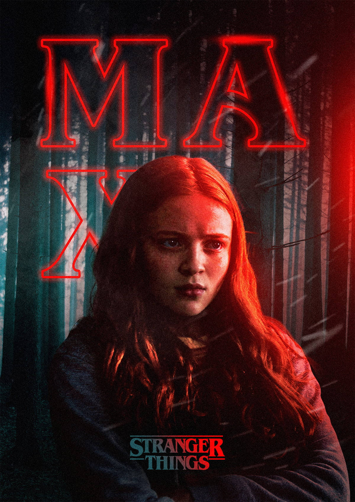
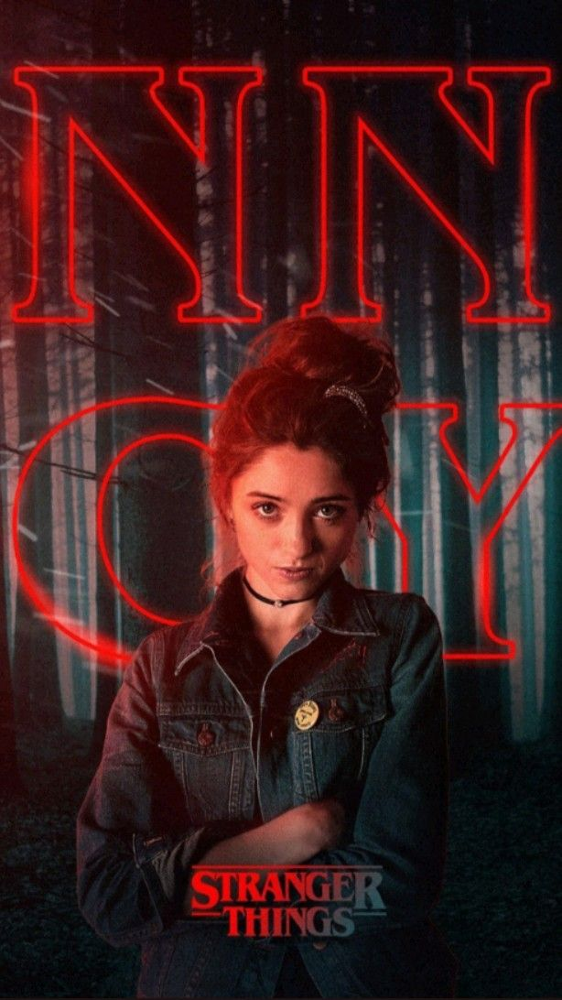

Stranger Things
| Season Number | 1 |
| Total Episodes | 8 |
| IMDb Rating | 8.7/10 |
Personal POV
Season 1 is a masterclass in atmosphere. It perfectly captures the 80s nostalgia without feeling like a gimmick. The synth-heavy score and wood-paneled sets make Hawkins feel lived-in and eerie.
The chemistry between the kids (Mike, Dustin, and Lucas) is the heartbeat of the show. Their search for Will is grounded and emotionally charged, making the supernatural threats feel genuinely dangerous.
Final Verdict
Stranger Things
| Season Number | 2 |
| Total Episodes | 9 |
| IMDb Rating | 8.5/10 |
Personal POV
Season 2, often called Stranger Things 2, successfully expands the lore. The stakes feel massive as we move from a single monster to the looming threat of the Mind Flayer. The "Upside Down" starts bleeding into reality in a terrifying way.
The standout element here is the character development. The unlikely duo of Steve and Dustin is comedic gold, and the introduction of Max adds a fresh dynamic to the party. Will Byers (Noah Schnapp) delivers an incredible performance as he struggles with "True Sight."
Final Verdict

Stranger Things
| Season Number | 3 |
| Total Episodes | 8 |
| IMDb Rating | 8.7/10 |
Personal POV
Season 3 is a colorful, high-energy explosion of 80s Americana. Moving the action to the Starcourt Mall was a brilliant move, perfectly capturing the transition from childhood to adolescence as the party starts to deal with romance and growing apart.
The threat of the Mind Flayer becomes more visceral and "fleshy" this season. The introduction of Robin Buckley is a massive win, and the high-stakes Soviet conspiracy adds a fun, action-movie layer to the supernatural horror.
Final Verdict

Stranger Things
| Season Number | 4 |
| Total Episodes | 9 |
| IMDb Rating | 8.9/10 |
Personal POV
Season 4 is a cinematic masterpiece that shifts the show into full-blown psychological horror. Volume 1 introduces Vecna, a terrifyingly human villain who preys on trauma. The reveal of his identity as 001 is easily one of the greatest plot twists in television history.
Volume 2 concludes the saga with monumental, movie-length episodes. From Eddie Munson's legendary guitar solo in the Upside Down to the heart-wrenching "Running Up That Hill" sequence, the stakes are life-or-death. It’s an emotional, high-stakes journey that perfectly sets the stage for the final war.
Final Verdict
Stranger Things
| Season Number | 5 |
| Total Episodes | 8 |
| IMDb Rating | 9.2/10 |
Personal POV
The final season is a masterpiece of closure. It brings the story full circle, returning the focus to Will Byers and the original basement where it all began. The "Upside Down" leaking into Hawkins creates a post-apocalyptic tension that never lets up.
The Eleven vs. Vecna rematch is everything we hoped for, but the true strength lies in the quiet moments between the characters we've grown up with. Seeing the "Party" stand together one last time is emotionally overwhelming and perfectly honors their journey.